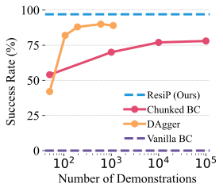
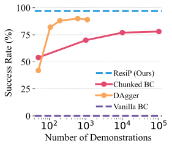

Behavior cloning (BC) currently stands as a dominant paradigm for learning real-world visual manipulation. However, in tasks that require locally corrective behaviors like multi-part assembly, learning robust policies purely from human demonstrations remains challenging. Reinforcement learning (RL) can mitigate these limitations by allowing policies to acquire locally corrective behaviors through task reward supervision and exploration.
This paper explores the use of RL fine-tuning to improve upon BC-trained policies in precise manipulation tasks. We analyze and overcome technical challenges associated with using RL to directly train policy networks that incorporate modern architectural components like diffusion models and action chunking. We propose training residual policies on top of frozen BC-trained diffusion models using standard policy gradient methods and sparse rewards.
Our experimental results demonstrate that this residual learning framework can significantly improve success rates beyond the base BC-trained models in high-precision assembly tasks by learning corrective actions. We also show that by combining our residual learning approach with teacher-student distillation and visual domain randomization, our method can enable learning real-world policies for robotic assembly directly from RGB images.


 

There's a lot of excellent work related to ours in the space of manipulation and assembly, for example:
FurnitureBench introduces a real-world furniture assembly benchmark, which aims at providing a reproducible and easy-to-use platform for long-horizon complex robotic manipulation that we use in our work.
ASAP is a physics-based planning approach for automatically generating sequences for general-shaped assemblies, accounting for gravity to design a sequence where each sub-assembly is physically stable.
InsertionNet 1.0 and 2.0 address the problem of insertion specifically and propose regression-based methods that combine visual and force inputs to solve various insertion tasks efficiently and robustly. InsertionNet 2.0 improves upon the original by introducing multimodal input, contrastive learning, and a one-shot learning technique using a relation network scheme, achieving near-perfect performance on 16 real-life insertion tasks while minimizing execution time and contact during insertion.
Grasping with Chopsticks develops an autonomous chopsticks-equipped robotic manipulator for picking up small objects using mainly two approaches to reduce covariate shift and improve generalization: applying an invariant operator to increase data support at critical grasping steps and generating synthetic corrective labels to prevent error accumulation.
There's been an increasing amount of theoretical analysis of imitation learning, with recent works focusing on the properties of noise injection and corrective actions. Provable Guarantees for Generative Behavior Cloning proposes a framework for generative behavior cloning, ensuring continuity through data augmentation and noise injection. CCIL generates corrective data using local continuity in environment dynamics, while TaSIL penalizes deviations in higher-order Taylor series terms between learned and expert policies. These works aim to enhance the robustness and sample efficiency of imitation learning algorithms.
@inproceedings{
ankile2024from,
title={From Imitation to Refinement {\textendash} Residual {RL} for Precise Visual Assembly},
author={Lars Lien Ankile and Anthony Simeonov and Idan Shenfeld and Marcel Torne Villasevil and Pulkit Agrawal},
booktitle={RSS 2024 Workshop: Data Generation for Robotics},
year={2024},
url={https://openreview.net/forum?id=eSNLGFo6nu}
}